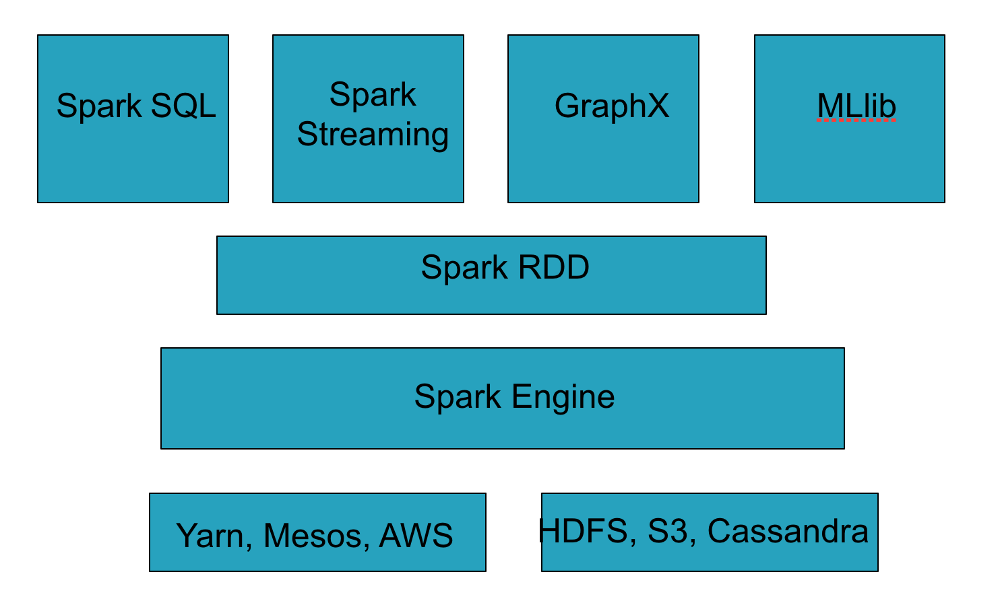
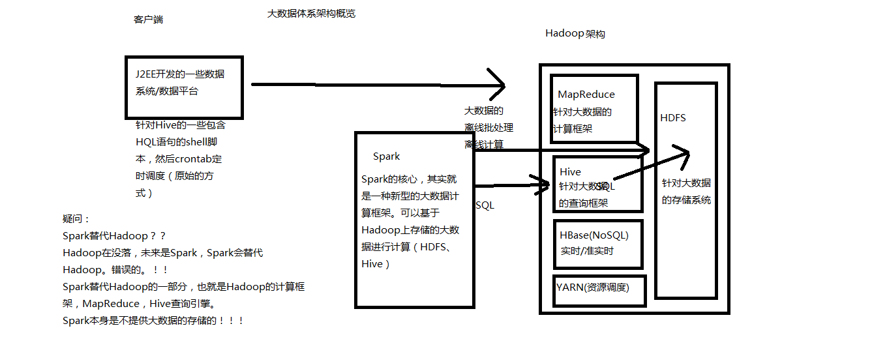
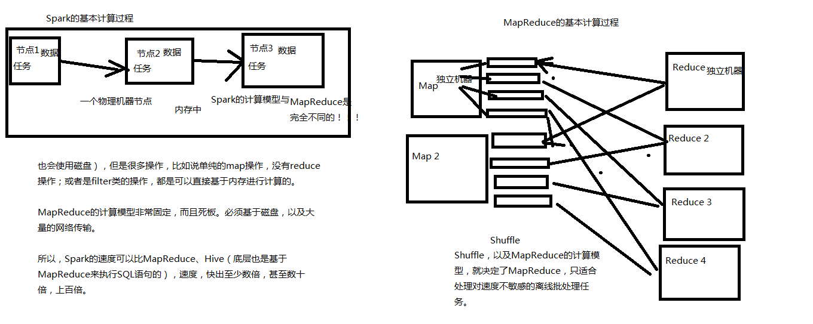
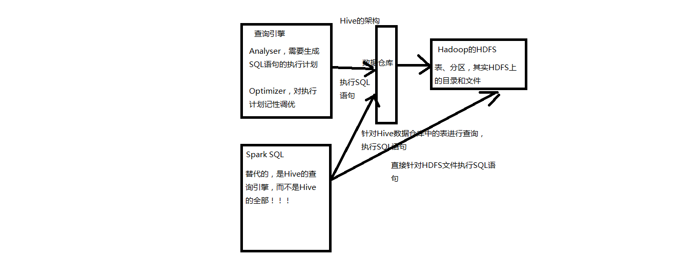
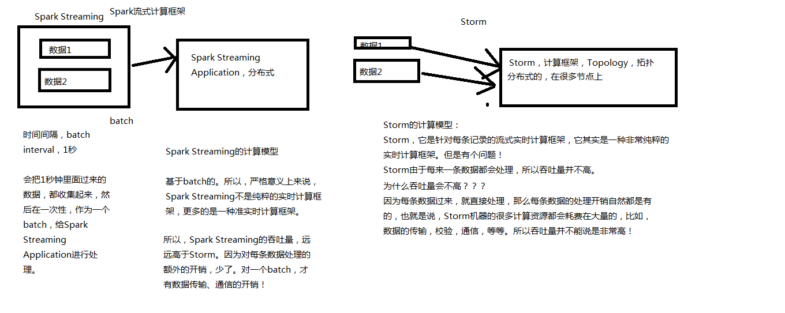
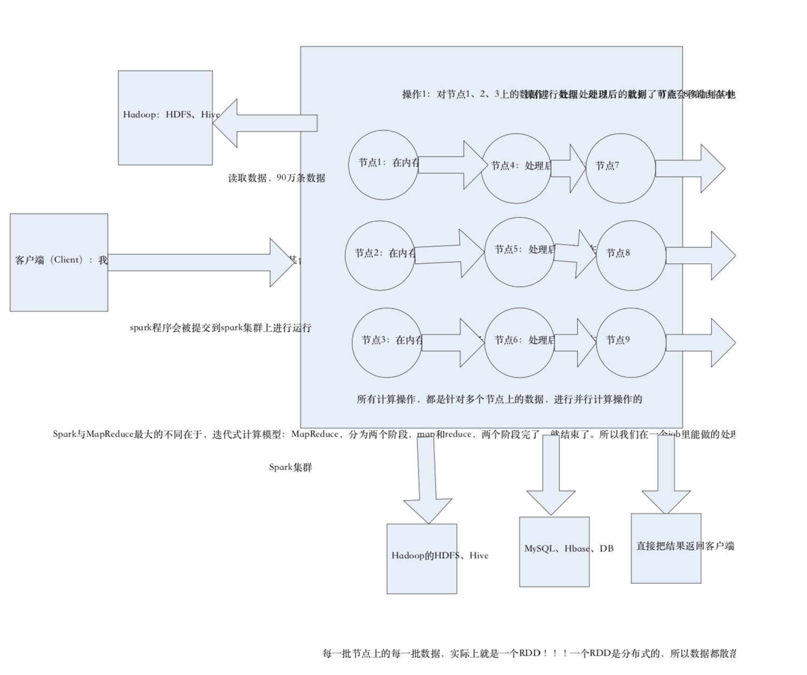
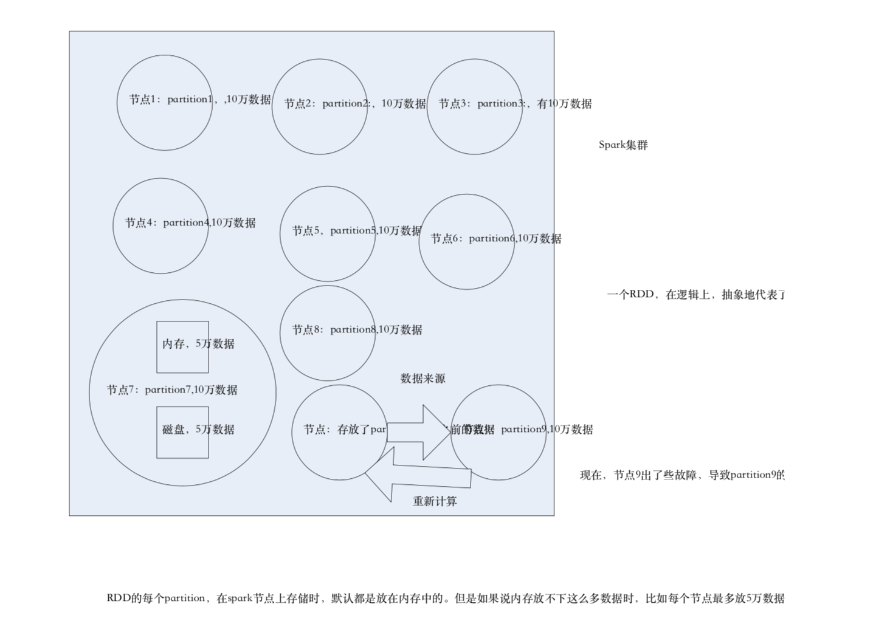

Spark从入门到精通（案例实战、高级特性、内核源码、性能调优）中华石杉
Spark的前世今生
Spark是什么
Spark，是一种通用的大数据计算框架，正如传统大数据技术Hadoop的MapReduce、Hive引擎，以及Storm流式实时计算引擎等。
Spark包含了大数据领域常见的各种计算框架：比如Spark Core用于离线计算，Spark SQL用于交互式查询，Spark Streaming用于实时流式计算，Spark MLlib用于机器学习，Spark GraphX用于图计算。
Spark主要用于大数据的计算，而Hadoop以后主要用于大数据的存储（比如HDFS、Hive、HBase等），以及资源调度（Yarn）。
Spark+Hadoop的组合，是未来大数据领域最热门的组合，也是最有前景的组合。
Spark的介绍
Spark，是一种”One Stack to rule them all”的大数据计算框架，期望使用一个技术堆栈就完美地解决大数据领域的各种计算任务。Apache官方，对Spark的定义就是：通用的大数据快速处理引擎。
Spark使用Spark RDD、Spark SQL、Spark Streaming、MLlib、GraphX成功解决了大数据领域中，离线批处理、交互式查询、实时流计算、机器学习与图计算等最重要的任务和问题。
Spark除了一站式的特点之外，另外一个最重要的特点，就是基于内存进行计算，从而让它的速度可以达到MapReduce、Hive的数倍甚至数十倍。
现在已经有很多大公司正在生产环境下深度地使用Spark作为大数据的计算框架，包括eBay、Yahoo!、BAT、网易、京东、华为、大众点评、优酷土豆、搜狗等等。
Spark同时也获得了多个世界顶级IT厂商的支持，包括IBM、Intel等。
Spark整体架构

大数据体系概览

Spark的历史
2009年，Spark诞生于伯克利大学的AMPLab实验室。最出Spark只是一个实验性的项目，代码量非常少，属于轻量级的框架。
2010年，伯克利大学正式开源了Spark项目。
2013年，Spark成为了Apache基金会下的项目，进入高速发展期。第三方开发者贡献了大量的代码，活跃度非常高。
2014年，Spark以飞快的速度称为了Apache的顶级项目。
2015年～，Spark在国内IT行业变得愈发火爆，大量的公司开始重点部署或者使用Spark来替代MapReduce、Hive、Storm等传统的大数据计算框架。
Spark的特点
速度快：Spark基于内存进行计算（当然也有部分计算基于磁盘，比如shuffle）。
容易上手开发：Spark的基于RDD的计算模型，比Hadoop的基于Map-Reduce的计算模型要更加易于理解，更加易于上手开发，实现各种复杂功能，比如二次排序、topn等复杂操作时，更加便捷。
超强的通用性：Spark提供了Spark RDD、Spark SQL、Spark Streaming、Spark MLlib、Spark GraphX等技术组件，可以一站式地完成大数据领域的离线批处理、交互式查询、流式计算、机器学习、图计算等常见的任务。
集成Hadoop：Spark并不是要成为一个大数据领域的“独裁者”，一个人霸占大数据领域所有的“地盘”，而是与Hadoop进行了高度的集成，两者可以完美的配合使用。Hadoop的HDFS、Hive、HBase负责存储，YARN负责资源调度；Spark复杂大数据计算。实际上，Hadoop+Spark的组合，是一种“double win”的组合。
极高的活跃度：Spark目前是Apache基金会的顶级项目，全世界有大量的优秀工程师是Spark的committer。并且世界上很多顶级的IT公司都在大规模地使用Spark。
Spark VS MapReduce
MapReduce能够完成的各种离线批处理功能，以及常见算法（比如二次排序、topn等），基于Spark RDD的核心编程，都可以实现，并且可以更好地、更容易地实现。而且基于Spark RDD编写的离线批处理程序，运行速度是MapReduce的数倍，速度上有非常明显的优势。
Spark相较于MapReduce速度快的最主要原因就在于，MapReduce的计算模型太死板，必须是map-reduce模式，有时候即使完成一些诸如过滤之类的操作，也必须经过map-reduce过程，这样就必须经过shuffle过程。而MapReduce的shuffle过程是最消耗性能的，因为shuffle中间的过程必须基于磁盘来读写。而Spark的shuffle虽然也要基于磁盘，但是其大量transformation操作，比如单纯的map或者filter等操作，可以直接基于内存进行pipeline操作，速度性能自然大大提升。
但是Spark也有其劣势。由于Spark基于内存进行计算，虽然开发容易，但是真正面对大数据的时候（比如一次操作针对10亿以上级别），在没有进行调优的情况下，可能会出现各种各样的问题，比如OOM内存溢出等等。导致Spark程序可能都无法完全运行起来，就报错挂掉了，而MapReduce即使是运行缓慢，但是至少可以慢慢运行完。
此外，Spark由于是新崛起的技术新秀，因此在大数据领域的完善程度，肯定不如MapReduce，比如基于HBase、Hive作为离线批处理程序的输入输出，Spark就远没有MapReduce来的完善。实现起来非常麻烦。

Spark SQL VS Hive
Spark SQL实际上并不能完全替代Hive，因为Hive是一种基于HDFS的数据仓库，并且提供了基于SQL模型的，针对存储了大数据的数据仓库，进行分布式交互查询的查询引擎。
严格的来说，Spark SQL能够替代的，是Hive的查询引擎，而不是Hive本身，实际上即使在生产环境下，Spark SQL也是针对Hive数据仓库中的数据进行查询，Spark本身自己是不提供存储的，自然也不可能替代Hive作为数据仓库的这个功能。
Spark SQL的一个优点，相较于Hive查询引擎来说，就是速度快，同样的SQL语句，可能使用Hive的查询引擎，由于其底层基于MapReduce，必须经过shuffle过程走磁盘，因此速度是非常缓慢的。很多复杂的SQL语句，在hive中执行都需要一个小时以上的时间。而Spark SQL由于其底层基于Spark自身的基于内存的特点，因此速度达到了Hive查询引擎的数倍以上。
但是Spark SQL由于与Spark一样，是大数据领域的新起的新秀，因此还不够完善，有少量的Hive支持的高级特性，Spark SQL还不支持，导致Spark SQL暂时还不能完全替代Hive的查询引擎。而只能在部分Spark SQL功能特性可以满足需求的场景下，进行使用。
而Spark SQL相较于Hive的另外一个优点，就是支持大量不同的数据源，包括hive、json、parquet、jdbc等等。此外，Spark SQL由于身处Spark技术堆栈内，也是基于RDD来工作，因此可以与Spark的其他组件无缝整合使用，配合起来实现许多复杂的功能。比如Spark SQL支持可以直接针对hdfs文件执行sql语句。

Spark Streaming VS Storm
Spark Streaming与Storm都可以用于进行实时流计算。但是他们两者的区别是非常大的。其中区别之一，就是，Spark Streaming和Storm的计算模型完全不一样，Spark Streaming是基于RDD的，因此需要将一小段时间内的，比如1秒内的数据，收集起来，作为一个RDD，然后再针对这个batch的数据进行处理。而Storm却可以做到每来一条数据，都可以立即进行处理和计算。因此，Spark Streaming实际上严格意义上来说，只能称作准实时的流计算框架；而Storm是真正意义上的实时计算框架。
此外，Storm支持的一项高级特性，是Spark Streaming暂时不具备的，即Storm支持在分布式流式计算程序（Topology）在运行过程中，可以动态地调整并行度，从而动态提高并发处理能力。而Spark Streaming是无法动态调整并行度的。
但是Spark Streaming也有其优点，首先Spark Streaming由于是基于batch进行处理的，因此相较于Storm基于单条数据进行处理，具有数倍甚至数十倍的吞吐量。
此外，Spark Streaming由于也身处于Spark生态圈内，因此Spark Streaming可以与Spark Core、Spark SQL，甚至是Spark MLlib、Spark GraphX进行无缝整合。流式处理完的数据，可以立即进行各种map、reduce转换操作，可以立即使用sql进行查询，甚至可以立即使用machine learning或者图计算算法进行处理。这种一站式的大数据处理功能和优势，是Storm无法匹敌的。
因此，综合上述来看，通常在对实时性要求特别高，而且实时数据量不稳定，比如在白天有高峰期的情况下，可以选择使用Storm。但是如果是对实时性要求一般，允许1秒的准实时处理，而且不要求动态调整并行度的话，选择Spark Streaming是更好的选择。

Spark的个人使用体会
首先，Spark目前来说，相较于MapReduce来说，可以立即替代的，并且会产生非常理想的效果的场景，就是要求低延时的复杂大数据交互式计算系统。比如某些大数据系统，可以根据用户提交的各种条件，立即定制执行复杂的大数据计算系统，并且要求低延时（一小时以内）即可以出来结果，并通过前端页面展示效果。在这种场景下，对速度比较敏感的情况下，非常适合立即使用Spark替代MapReduce。因为Spark编写的离线批处理程序，如果进行了合适的性能调优之后，速度可能是MapReduce程序的十几倍。从而达到用户期望的效果。
其次，相对于Hive来说，对于某些需要根据用户选择的条件，动态拼接SQL语句，进行某类特定查询统计任务的系统，其实类似于上述的系统。此时也要求低延时，甚至希望达到几分钟之内。此时也可以使用Spark SQL替代Hive查询引擎。因此场景比较固定，SQL语句的语法比较固定，清楚肯定不会使用到Spark SQL所不支持的Hive语法特性。此时使用Hive查询引擎可以需要几十分钟执行一个复杂SQL。而使用Spark SQl，可能只需要使用几分钟。可以达到用户期望的效果
最后，对于Storm来说，如果仅仅要求对数据进行简单的流式计算处理，那么选择storm或者spark streaming都无可厚非。但是如果需要对流式计算的中间结果（RDD），进行复杂的后续处理，则使用Spark更好，因为Spark本身提供了很多原语，比如map、reduce、groupByKey、filter等等。
Spark目前在国内的现状以及未来的展望
Spark目前在国内正在飞速地发展，并且在很多领域，以及慢慢开始替代传统得一些基于Hadoop的组件。比如BAT、京东、搜狗等知名的互联网企业，都在深度的，大规模地使用Spark。
但是，大家如果去观察一下一些招聘网站对大数据的招聘需求，就会发现，目前来说，由于大部分还是大公司在使用Spark，因此大部分中小型企业，还是主要在使用Hadoop进行大数据处理。在招聘时，还是主要以hadoop工程师为主。Spark以及Storm的招聘还是相对Hadoop来说，会少一些。
但是，大家如果通过本堂课的讲解，能够较为全面地对Spark有一个感性得认识，就能意识到，Spark在大数据领域中，是未来的一个趋势和方向。随着Spark、Spark SQL以及Spark Streaming慢慢成熟，就会慢慢替代掉Hadoop的MapReduce、Hive查询等。大家可以想想，如果两者都能够实现相同的功能，而Spark甚至以后还可以做的更好，速度要快好几倍，甚至好几十倍。那么还有谁会愿意使用MapReduce或Hive查询引擎呢？
实际上，根据我在国内一线互联网公司这几年的工作和观察，以及通过与行业内各个规模公司的朋友交流，认为，未来的主流，一定是hadoop+Spark的这种组合，double win的格局。hadoop的特长，就是hdfs，分布式存储，基于此之上的是Hive作为大数据的数据仓库，HBase作为大数据的实时查询NoSQL数据库，YARN作为通用的资源调度框架；而Spark，则发挥它的特长，将各种各样的大数据计算模型汇聚在一个技术堆栈内，对hadoop上的大数据进行各种计算处理。
因此，大家也可以看到，Spark目前正在变得越来越火爆，招聘的企业正在越来越多，而且目前国内spark人才可以说是稀缺。在目前，以及未来，完全供不应求，因此这种趋势，以及这种现状，就决定了，对于我们个人来说，目前进行spark的学习以及研究，完全是未来一个获取快速升值的机会。
课程介绍、特色与价值
课程前置部分
- Scala编程详解。为什么要学习Scala？阅读Spark源码、在公司需要的时候使用Scala进行Spark应用的开发，但是本课程所有示例代码用Java。
- Scala基础语法
- Scala面向对象编程
- Scala函数式编程
- Scala高级特性（泛型、隐式转换）
- Scala Actor并发编程
- 课程环境搭建。
- Hadoop 2.4.1集群搭建
- Spark 1.3.0集群搭建
Spark核心编程
- RDD介绍
- Spark基本工作原理
- Spark开发入门
- 编写WordCount程序
- 使用本地模式进行测试
- 使用spark-submit提交到集群运行（spark-submit常用参数说明）
- Spark程序开发流程总结
- spark-shell的使用（编写wordcount程序）
- 创建RDD：并行化集合、基于文件创建RDD
- 操作RDD：transformation和action，java 8和旧版本的区别，操作key-value对
- RDD常用操作全程案例实战
- RDD持久化：cache()和persist()，几种持久化策略
- 共享变量：broadcast variable、accumulator
- RDD高级编程：基于排序算法的WordCount、二次排序、topn、combineByKey
结合源码深度剖析Spark内核
- Spark内核概览
- Spark核心概念
- Spark工作流程
- Spark运行模式
- SparkContext原理剖析与源码分析
- job触发流程原理剖析与源码分析
- Master原理剖析（资源调度算法）
- 高可用机制原理剖析
- 注册机制原理剖析
- executor失败容错机制原理剖析
- 资源调度算法剖析
- Worker原理剖析
- DAGScheduler原理剖析
- stage划分算法
- TaskScheduler原理剖析
- task分配算法
- Executor原理剖析
- ShuffleMapTask和ResultTask原理剖析
- Shuffle原理剖析
- Storage模块原理剖析
- BlockManager原理剖析
- Cache原理剖析
- Checkpoint原理剖析
Spark性能优化
- 使用Kryo进行序列化
- 优化数据结构
- 对多次执行action operation的RDD进行持久化
- 对RDD持久化进行序列化
- 垃圾回收调优
- 提高并行度
- 广播大数据集
- 数据本地化
- reduceByKey和groupByKey
- shuffle性能调优
Spark SQL
- DataFrame的使用
- 将RDD转化为DataFrame
- 支持的数据源（parquet、json、hive、jdbc）
- 工作原理
- 性能调优
Spark Streaming
- 基本工作原理
- WordCount与开发流程
- 输入DStream（hdfs、socket、kafka）
- DStream的transformation操作（updateStateByKey、transform、slide window）
- DStream的output操作（性能优化与最佳实践）
- Spark Streaming与Spark SQL整合
- Cache、Checkpoint、Ahead Write Log
- 容错机制
- 源码剖析
- 性能调优
MLlib和GraphX
MLLib和Graphx本系列课程不讲。MLlib和Graphx分别用于机器学习和图计算。
一是因为，在目前国内，大部分的Spark开发岗位中，其实主要还是使用Spark Core、Spark SQL和Spark Streaming，很少使用MLlib和Graphx。因此就算讲了，也未必就一定马上会有价值。在市场上对MLlib和Graphx的需求量，是非常少的，通常都是专业的机器学习工程师会使用。
二是因为，机器学习和图计算本身都涵盖非常多的，和深奥的专业知识，本系列课程的目标是让Spark开发人员能够从入门到精通，总共就几十讲的时间，如果还讲这两个东西，会耗费大量时间。最后就导致Spark的组件中没有一个是讲透彻的，都是泛泛入门。
因此，本系列课程的定位就是，让Spark开发人员能够零基础起步，从入门到精通Spark Core、Spark SQL和Spark Streaming的开发。而不会涉及MLlib和Graphx。用50～60讲的时间把核心开发相关的三个组件彻底从源码的角度讲透彻。
各个部分的内容学习好的效果
- 如果能够学扎实基础课程，以及Spark核心编程，那么可以称之为Spark入门级别的水平。
- 如果能够学扎实基础课程、Spark核心编程，以及Spark SQL和Spark Streaming的所有功能使用，并熟练掌握，那么可以称之为熟悉Spark的水平。
- 如果能够学精通本课程所有的内容，包括基础、各组件功能使用、Spark内核原理、Spark内核源码、Spark性能调优、Spark SQL原理和性能调优、Spark Streaming原理和性能调优，那么可以称之为精通Spark的水平。
- 根据我在企业中面试Spark工程师的经验来看，应届生，需要达到入门级的水平，去面试校招；1～3年工作经验的，需要达到熟练的水平去面试Spark开发工程师的岗位；3年以上工作经验的，需要达到精通Spark的水平，去面试Spark高级开发工程师的岗位。
课程特色
- 使用最新版本：Hadoop 2.4.1、Spark 1.3.0（其他课程都是Spark 1.1及以前的版本）
- 从零起步：从scala到环境手把手搭建到精通spark开发和源码（其他课程很多都省略了环境搭建等步骤，导致零基础者无从下手）
- 涵盖Spark所有功能（其他课程一般都只包含了Spark的部分基础功能，不涉及高级功能，比如spark streaming容错、二次排序、combineByKey等）
- 全程案例实战：所有功能均基于案例实战驱动（其他课程很多都是写几个简单demo）
- 结合源码对Spark内核进行深度剖析：彻底讲透Spark内核（其他课程虽然也讲内核，但都是浅尝辄止，讲的浅，讲不透，让人云里雾里，更不用说结合源码了）
- 对原理以及内核部分全程手工画图讲解（其他课程都是对着PPT，或者网络上已有的图片，干讲内核，让人不好理解）
- 深度讲解Spark性能调优，尤其是精通spark shuffle调优（其它课程基本都是讲一些最基础的优化方法）
课程面向的人群以及课程的价值
- Java / J2EE开发工程师
- Hadoop开发工程师
- Spark入门级别的，或者只有一定基础的
- 在校或者刚毕业的学生
对于Java/J2EE开发工程师，可以通过学习本课程进行转型，成功转型为大数据领域的工程师，当然，前提是，建议自己补充Hadoop基础的知识。普通J2EE工程师的薪资其实一般都在20k以下，但是如果有2~3年工作经验的人，达到熟悉或者精通本课程的水平，达到20k~30k是绝对没有问题的。
对于Hadoop开发工程师，以及Spark入门级的，可以通过学习本课程，增加自己在大数据领域的技能，提高自己在公司，在职场的竞争力。争取在公司内的升级、升职、加薪，承接公司最新的基于Spark的项目。当然，也完全可以通过学习，进行跳槽。
对于在校或者刚毕业的学生，如果有志进入大数据行业，则可以通过学习本课程，增加自己在校招中的通过率，提高自己简历的含金量，为自己获取更多的面试机会。并且提高自己刚毕业的薪资。
Scala基础语法
Scala与Java的关系
Scala与Java的关系是非常紧密的。
因为Scala是基于Java虚拟机，也就是JVM的一门编程语言。所有Scala的代码，都需要经过编译为字节码，然后交由Java虚拟机来运行。
所以Scala和Java是可以无缝互操作的。Scala可以任意调用Java的代码。所以Scala与Java的关系是非常非常紧密的。
安装Scala
Scala解释器的使用
REPL：Read（取值）-> Evaluation（求值）-> Print（打印）-> Loop（循环）。scala解释器也被称为REPL，会快速编译scala代码为字节码，然后交给JVM来执行。
计算表达式：在scala>命令行内，键入scala代码，解释器会直接返回结果给你。如果你没有指定变量来存放这个值，那么值默认的名称为res，而且会显示结果的数据类型，比如Int、Double、String等等。
例如，输入1 + 1，会看到res0: Int = 2
内置变量：在后面可以继续使用res这个变量，以及它存放的值。
例如，2.0 * res0，返回res1: Double = 4.0
例如，”Hi, “ + res0，返回res2: String = Hi, 2
自动补全：在scala>命令行内，可以使用Tab键进行自动补全。
例如，输入res2.to，敲击Tab键，解释器会显示出以下选项，toCharArray，toLowerCase，toString，toUpperCase。因为此时无法判定你需要补全的是哪一个，因此会提供给你所有的选项。
例如，输入res2.toU，敲击Tab键，直接会给你补全为res2.toUpperCas
1 | 1 + 1 |
声明变量
声明val变量：可以声明val变量来存放表达式的计算结果。
例如，val result = 1 + 1
后续这些常量是可以继续使用的。
例如，2 * result
但是常量声明后，是无法改变它的值的，例如，result = 1，会返回error: reassignment to val的错误信息。
声明var变量：如果要声明值可以改变的引用，可以使用var变量。
例如，var myresult = 1，myresult = 2
但是在scala程序中，通常建议使用val，也就是常量，因此比如类似于spark的大型复杂系统中，需要大量的网络传输数据，如果使用var，可能会担心值被错误的更改。
在Java的大型复杂系统的设计和开发中，也使用了类似的特性，我们通常会将传递给其他模块 / 组件 / 服务的对象，设计成不可变类（Immutable Class）。在里面也会使用java的常量定义，比如final，阻止变量的值被改变。从而提高系统的健壮性（robust，鲁棒性），和安全性。
指定类型：无论声明val变量，还是声明var变量，都可以手动指定其类型，如果不指定的话，scala会自动根据值，进行类型的推断。
例如，val name: String = null
例如，val name: Any = “leo”
声明多个变量：可以将多个变量放在一起进行声明。
例如，val name1, name2:String = null
例如，val num1, num2 = 100
1 | val result = 1 + 1 |
数据类型与操作符
基本数据类型：Byte、Char、Short、Int、Long、Float、Double、Boolean。乍一看与Java的基本数据类型的包装类型相同，但是scala没有基本数据类型与包装类型的概念，统一都是类。scala自己会负责基本数据类型和引用类型的转换操作。使用以上类型，直接就可以调用大量的函数。
例如，1.toString()，1.to(10)
类型的加强版类型：scala使用很多加强类给数据类型增加了上百种增强的功能或函数。
例如，String类通过StringOps类增强了大量的函数，”Hello”.intersect(“ World”)。
例如，Scala还提供了RichInt、RichDouble、RichChar等类型，RichInt就提供了to函数，1.to(10)，此处Int先隐式转换为RichInt，然后再调用其to函数基本操作符：scala的算术操作符与java的算术操作符也没有什么区别，
例如，+、-、*、/等。但是，在scala中，这些操作符其实是数据类型的函数。
例如，1 + 1，可以写做1.+(1)
例如，1.to(10)，又可以写做1 to 10scala中没有提供++、–操作符，我们只能使用+和-。
例如counter = 1，counter++是错误的，必须写做counter += 1
1 | 1.toString() |
函数调用与apply()函数
函数调用方式：在scala中，函数调用也很简单。
例如，import scala.math._，sqrt(2)，pow(2, 4)，min(3, Pi)
不同的一点是，如果调用函数时，不需要传递参数，则scala允许调用函数时省略括号的。
例如，”Hello World”.distinct
apply函数：Scala中的apply函数是非常特殊的一种函数，在Scala的object中，可以声明apply函数。而使用“类名()”的形式，其实就是“类名.apply()”的一种缩写。通常使用这种方式来构造类的对象，而不是使用“new 类名()”的方式。
例如，”Hello World”(6)，因为在StringOps类中有def apply(n: Int): Char的函数定义，所以”Hello World”(6)，实际上是”Hello World”.apply(6)的缩写。
例如，Array(1, 2, 3, 4)，实际上是用Array object的apply()函数来创建Array类的实例，也就是一个数组。
1 | import scala.math._ |
Scala条件控制与循环
if表达式
if表达式的定义：在Scala中，if表达式是有值的，就是if或者else中最后一行语句返回的值。
例如，val age = 30; if (age > 18) 1 else 0。可以将if表达式赋予一个变量。例如，val isAdult = if (age > 18) 1 else 0。另外一种写法，var isAdult = -1; if(age > 18) isAdult = 1 else isAdult = 0，但是通常使用上一种写法。
if表达式的类型推断：由于if表达式是有值的，而if和else子句的值类型可能不同，此时if表达式的值是什么类型呢？Scala会自动进行推断，取两个类型的公共父类型。例如，if(age > 18) 1 else 0，表达式的类型是Int，因为1和0都是Int。例如，if(age > 18) “adult” else 0，此时if和else的值分别是String和Int，则表达式的值是Any，Any是String和Int的公共父类型。如果if后面没有跟else，则默认else的值是Unit，也用()表示，类似于java中的void或者null。例如，val age = 12; if(age > 18) “adult”。此时就相当于if(age > 18) “adult” else ()。将if语句放在多行中：默认情况下，REPL只能解释一行语句，但是if表达式通常需要放在多行。if(age > 18) { “adult” } else if(age > 12) “teenager” else “children”。
1 | var age = 30 |
语句终结符、块表达式
默认情况下，scala不需要语句终结符，默认将每一行作为一个语句
一行放多条语句：如果一行要放多条语句，则必须使用语句终结符
例如，使用分号作为语句终结符，var a, b, c = 0; if(a < 10) { b = b + 1; c = c + 1 }
通常来说，对于多行语句，还是会使用花括号的方式1
2
3
4if(a < 10) {
b = b + 1
c = c + 1
}
块表达式：块表达式，指的就是{}中的值，其中可以包含多条语句，最后一个语句的值就是块表达式的返回值。
例如，var d = if(a < 10) { b = b + 1; c + 1 }
1 | var a, b, c = 0 |
输入和输出
print和println：print打印时不会加换行符，而println打印时会加一个换行符。
例如，print(“Hello World”); println(“Hello World”)
printf：printf可以用于进行格式化
例如，printf(“Hi, my name is %s, I’m %d years old.\n”, “Leo”, 30)
readLine: readLine允许我们从控制台读取用户输入的数据，类似于java中的System.in和Scanner的作用。
- 综合案例：游戏厅门禁
1 | print("Hello World"); println("Hello World") |
1 | import scala.io.StdIn |
循环
- while do循环：Scala有while do循环，基本语义与Java相同。
- Scala没有for循环，只能使用while替代for循环，或者使用简易版的for语句。简易版for语句：var n = 10; for(i <- 1 to n) println(i)。或者使用until，表式不达到上限：for(i <- 1 until n) println(i)。也可以对字符串进行遍历，类似于java的增强for循环，for(c <- “Hello World”) print(c)
- 跳出循环语句。scala没有提供类似于java的break语句。但是可以使用boolean类型变量、return或者Breaks的break函数来替代使用。
1 | 1 + "" |
高级for循环
- 多重for循环：九九乘法表
1 | for (i <- 1 to 9; j <- 1 to i) { |
- if守卫：取偶数
1 | for (i <- 1 to 10 if i % 2 == 0) print(i + " ") |
- for推导式：构造集合
1 | for (i <- 1 to 10) yield i |
Scala函数入门
函数的定义与调用
在Scala中定义函数时，需要定义函数的函数名、参数、函数体。
我们的第一个函数如下所示：
1 | def sayHello(name: String, age: Int) = { |
Scala要求必须给出所有参数的类型，但是不一定给出函数返回值的类型，只要右侧的函数体中不包含递归的语句，Scala就可以自己根据右侧的表达式推断出返回类型。
在代码块中定义包含多行语句的函数体
- 单行的函数：
1 | def sayHello(name: String) = print("Hello, " + name) |
- 如果函数体中有多行代码，则可以使用代码块的方式包裹多行代码，代码块中最后一行的返回值就是整个函数的返回值。与Java中不同，不是使用return返回值的。比如如下的函数，实现累加的功能：
1 | def sum(n: Int) = { |
递归函数与返回类型
如果在函数体内递归调用函数自身，则必须手动给出函数的返回类型。
例如，实现经典的斐波那契数列：
1 | def fab(n: Int): Int = { |
默认参数
在Scala中，有时我们调用某些函数时，不希望给出参数的具体值，而希望使用参数自身默认的值，此时就定义在定义函数时使用默认参数。
1 | def sayHello(firstName: String, middleName: String = "William", lastName: String = "Croft") = firstName + " " + middleName + " " + lastName |
如果给出的参数不够，则会从左往右依次应用参数。
带名参数
在调用函数时，也可以不按照函数定义的参数顺序来传递参数，而是使用带名参数的方式来传递。还可以混合使用未命名参数和带名参数，但是未命名参数必须排在带名参数前面。
1 | def sayHello(firstName: String, middleName: String, lastName: String) = firstName + " " + middleName + " " + lastName |
Java与Scala实现默认参数的区别
- Java
1 | public void sayHello(String name, int age) { |
- Scala
1 | def sayHello(name: String, age: Int = 20) { |
变长参数
在Scala中，有时我们需要将函数定义为参数个数可变的形式，则此时可以使用变长参数定义函数。
1 | def sum(nums: Int*) = { |
使用序列调用变长参数
在如果想要将一个已有的序列直接调用变长参数函数，是不对的。比如val s = sum(1 to 5)。此时需要使用Scala特殊的语法将参数定义为序列，让Scala解释器能够识别。这种语法非常有用！一定要好好主意，在spark的源码中大量地使用到了。
案例：使用递归函数实现累加
1 | def sum(nums: Int*): Int = { |
过程
在Scala中，定义函数时，如果函数体直接包裹在了花括号里面，而没有使用=连接，则函数的返回值类型就是Unit。这样的函数就被称之为过程。过程通常用于不需要返回值的函数。过程还有一种写法，就是将函数的返回值类型定义为Unit。
1 | def sayHello1(name: String) = "Hello, " + name |
lazy值
在Scala中，提供了lazy值的特性，也就是说，如果将一个变量声明为lazy，则只有在第一次使用该变量时，变量对应的表达式才会发生计算。这种特性对于特别耗时的计算操作特别有用，比如打开文件进行IO，进行网络IO等。
1 | import scala.io.Source._ |
异常
在Scala中，异常处理和捕获机制与Java是非常相似的。
1 | import java.io._ |
Array、ArrayBuffer
Array
在Scala中，Array代表的含义与Java中类似，也是长度不可改变的数组。此外，由于Scala与Java都是运行在JVM中，双方可以互相调用，因此Scala数组的底层实际上是Java数组。例如字符串数组在底层就是Java的String[]，整数数组在底层就是Java的Int[]。
1 | val a = new Array[Int](10) |
ArrayBuffer
在Scala中，如果需要类似于Java中的ArrayList这种长度可变的集合类，则可以使用ArrayBuffer。
1 | import scala.collection.mutable.ArrayBuffer |
遍历Array和ArrayBuffer
1 | val b = Array(1, 2, 3, 4, 5, 6, 7, 8, 9, 10) |
数组常见操作
1 | val a = Array(4, 2, 3, 1, 5) |
使用yield和函数式编程转换数组
1 | import scala.collection.mutable.ArrayBuffer |
移除第一个负数之后的所有负数
1 | import scala.collection.mutable.ArrayBuffer |
移除第一个负数之后的所有负数–改良版
1 | import scala.collection.mutable.ArrayBuffer |
Map、Tuple
Map
1 | val ages1 = Map("Leo" -> 30, "Jen" -> 25, "Jack" -> 23) |
SortedMap、LinkedHashMap
1 | val ages1 = scala.collection.immutable.SortedMap("leo" -> 30, "alice" -> 15, "jen" -> 25) |
Tuple
1 | val t = ("leo", 30) |
class
定义一个简单的类
1 | class HelloWorld { |
getter、setter
定义不带private的var field，此时scala生成的面向JVM的类时，会定义为private的name字段，并提供public的getter和setter方法。而如果使用private修饰field，则生成的getter和setter也是private的。如果定义val field，则只会生成getter方法。如果不希望生成setter和getter方法，则将field声明为private[this]。调用getter和setter方法，分别叫做name和name_ =。
1 | class Student { |
自定义getter、setter
如果只是希望拥有简单的getter和setter方法，那么就按照scala提供的语法规则，根据需求为field选择合适的修饰符就好：var、val、private、private[this]。但是如果希望能够自己对getter与setter进行控制，则可以自定义getter与setter方法。自定义setter方法的时候一定要注意scala的语法限制，签名、=、参数间不能有空格。
1 | class Student { |
仅暴露field的getter方法
如果你不希望field有setter方法，则可以定义为val，但是此时就再也不能更改field的值了。但是如果希望能够仅仅暴露出一个getter方法，并且还能通过某些方法更改field的值，那么需要综合使用private以及自定义getter方法。此时，由于field是private的，所以setter和getter都是private，对外界没有暴露；自己可以实现修改field值的方法；自己可以覆盖getter方法。
1 | class Student { |
private[this]的使用
如果将field使用private来修饰，那么代表这个field是类私有的，在类的方法中，可以直接访问类的其他对象的private field。这种情况下，如果不希望field被其他对象访问到，那么可以使用private[this]，意味着对象私有的field，只有本对象内可以访问到。
1 | class Student { |
Java风格的getter和setter方法
Scala的getter和setter方法的命名与java是不同的，是field和field_=的方式。如果要让scala自动生成java风格的getter和setter方法，只要给field添加@BeanProperty注解即可。此时会生成4个方法，name: String、name_=(newValue: String): Unit、getName(): String、setName(newValue: String): Unit。
1 | //import scala.reflect.BeanProperty |
辅助构造器
Scala中，可以给类定义多个辅助constructor，类似于java中的构造函数重载。辅助constructor之间可以互相调用，而且必须第一行调用主constructor。
1 | class Student { |
主构造器
Scala中，主constructor是与类名放在一起的，与java不同。而且类中，没有定义在任何方法或者是代码块之中的代码，就是主constructor的代码，这点感觉没有java那么清晰。主constructor中还可以通过使用默认参数，来给参数默认的值。如果主constrcutor传入的参数什么修饰都没有，比如name:String，那么如果类内部的方法使用到了，则会声明为private[this]name；否则没有该field，就只能被constructor代码使用而已。
1 | class Student(val name: String, val age: Int) { |
内部类
Scala中，同样可以在类中定义内部类；但是与java不同的是，每个外部类的对象的内部类，都是不同的类
1 | import scala.collection.mutable.ArrayBuffer |
object
object，相当于class的单个实例，通常在里面放一些静态的field或者method。第一次调用object的方法时，就会执行object的constructor，也就是object内部不在method中的代码；但是object不能定义接受参数的constructor。注意，object的constructor只会在其第一次被调用时执行一次，以后再次调用就不会再次执行constructor了。object通常用于作为单例模式的实现，或者放class的静态成员，比如工具方法。
1 | object Person { |
伴生对象
如果有一个class，还有一个与class同名的object，那么就称这个object是class的伴生对象，class是object的伴生类。伴生类和伴生对象必须存放在一个.scala文件之中。伴生类和伴生对象，最大的特点就在于，互相可以访问private field。
1 | object Person { |
object继承抽象类
object的功能其实和class类似，除了不能定义接受参数的constructor之外。object也可以继承抽象类，并覆盖抽象类中的方法。
1 | abstract class Hello(var message: String) { |
apply方法
object中非常重要的一个特殊方法，就是apply方法。通常在伴生对象中实现apply方法，并在其中实现构造伴生类的对象的功能。而创建伴生类的对象时，通常不会使用new Class的方式，而是使用Class()的方式，隐式地调用伴生对象得apply方法，这样会让对象创建更加简洁。
1 | val a = Array(1, 2, 3, 4, 5) |
main方法
就如同java中，如果要运行一个程序，必须编写一个包含main方法类一样；在scala中，如果要运行一个应用程序，那么必须有一个main方法，作为入口。scala中的main方法定义为def main(args: Array[String])，而且必须定义在object中。
1 | object HelloWorld { |
除了自己实现main方法之外，还可以继承App Trait，然后将需要在main方法中运行的代码，直接作为object的constructor代码；而且用args可以接受传入的参数。
1 | object HelloWorld extends App { |
App Trait的工作原理为：App Trait继承自DelayedInit Trait，scalac命令进行编译时，会把继承App Trait的object的constructor代码都放到DelayedInit Trait的delayedInit方法中执行。
object来实现枚举功能
Scala没有直接提供类似于Java中的Enum这样的枚举特性，如果要实现枚举，则需要用object继承Enumeration类，并且调用Value方法来初始化枚举值。还可以通过Value传入枚举值的id和name，通过id和toString可以获取; 还可以通过id和name来查找枚举值。
1 | object Season extends Enumeration { |
1 | object Season extends Enumeration { |
extends
Scala中，让子类继承父类，与Java一样，也是使用extends关键字。继承就代表，子类可以从父类继承父类的field和method；然后子类可以在自己内部放入父类所没有，子类特有的field和method；使用继承可以有效复用代码。子类可以覆盖父类的field和method；但是如果父类用final修饰，field和method用final修饰，则该类是无法被继承的，field和method是无法被覆盖的。
1 | class Person { |
override、super
Scala中，如果子类要覆盖一个父类中的非抽象方法，则必须使用override关键字。override关键字可以帮助我们尽早地发现代码里的错误，比如：override修饰的父类方法的方法名我们拼写错了；比如要覆盖的父类方法的参数我们写错了；等等。此外，在子类覆盖父类方法之后，如果我们在子类中就是要调用父类的被覆盖的方法呢？那就可以使用super关键字，显式地指定要调用父类的方法。
1 | class Person { |
override field
Scala中，子类可以覆盖父类的val field，而且子类的val field还可以覆盖父类的val field的getter方法；只要在子类中使用override关键字即可。
1 | class Person { |
isInstanceOf、asInstanceOf
如果我们创建了子类的对象，但是又将其赋予了父类类型的变量。则在后续的程序中，我们又需要将父类类型的变量转换为子类类型的变量，应该如何做？首先，需要使用isInstanceOf判断对象是否是指定类的对象，如果是的话，则可以使用asInstanceOf将对象转换为指定类型。注意，如果对象是null，则isInstanceOf一定返回false，asInstanceOf一定返回null。注意，如果没有用isInstanceOf先判断对象是否为指定类的实例，就直接用asInstanceOf转换，则可能会抛出异常。
1 | class Person |
getClass、classOf
isInstanceOf只能判断出对象是否是指定类以及其子类的对象，而不能精确判断出，对象就是指定类的对象。如果要求精确地判断对象就是指定类的对象，那么就只能使用getClass和classOf了。对象.getClass可以精确获取对象的类，classOf[类]可以精确获取类，然后使用==操作符即可判断。
1 | class Person |
模式匹配进行类型判断
但是在实际开发中，比如spark的源码中，大量的地方都是使用了模式匹配的方式来进行类型的判断，这种方式更加地简洁明了，而且代码得可维护性和可扩展性也非常的高。使用模式匹配，功能性上来说，与isInstanceOf一样，也是判断主要是该类以及该类的子类的对象即可，不是精准判断的。
1 | class Person |
protected
跟java一样，scala中同样可以使用protected关键字来修饰field和method，这样在子类中就不需要super关键字，直接就可以访问field和method。还可以使用protected[this]，则只能在当前子类对象中访问父类的field和method，无法通过其他子类对象访问父类的field和method。
1 | class Person { |
调用父类的构造器
Scala中，每个类可以有一个主constructor和任意多个辅助constructor，而每个辅助constructor的第一行都必须是调用其他辅助constructor或者是主constructor；因此子类的辅助constructor是一定不可能直接调用父类的constructor的。只能在子类的主constructor中调用父类的constructor，以下这种语法，就是通过子类的主构造函数来调用父类的构造函数。注意！如果是父类中接收的参数，比如name和age，子类中接收时，就不要用任何val或var来修饰了，否则会认为是子类要覆盖父类的field。
1 | class Person(val name: String, val age: Int) |
匿名内部类
在Scala中，匿名子类是非常常见，而且非常强大的。Spark的源码中也大量使用了这种匿名子类。匿名子类，也就是说，可以定义一个类的没有名称的子类，并直接创建其对象，然后将对象的引用赋予一个变量。之后甚至可以将该匿名子类的对象传递给其他函数。
1 | class Person(protected val name: String) { |
抽象类
如果在父类中，有某些方法无法立即实现，而需要依赖不同的子来来覆盖，重写实现自己不同的方法实现。此时可以将父类中的这些方法不给出具体的实现，只有方法签名，这种方法就是抽象方法。而一个类中如果有一个抽象方法，那么类就必须用abstract来声明为抽象类，此时抽象类是不可以实例化的。在子类中覆盖抽象类的抽象方法时，不需要使用override关键字。
1 | abstract class Person(val name: String) { |
抽象field
如果在父类中，定义了field，但是没有给出初始值，则此field为抽象field。抽象field意味着，scala会根据自己的规则，为var或val类型的field生成对应的getter和setter方法，但是父类中是没有该field的。子类必须覆盖field，以定义自己的具体field，并且覆盖抽象field，不需要使用override关键字。
1 | abstract class Person { |
trait
trait作为接口
Scala中的Triat是一种特殊的概念。首先我们可以将Trait作为接口来使用，此时的Triat就与Java中的接口非常类似。在triat中可以定义抽象方法，就与抽象类中的抽象方法一样，只要不给出方法的具体实现即可。类可以使用extends关键字继承trait，注意，这里不是implement，而是extends，在scala中没有implement的概念，无论继承类还是trait，统一都是extends。类继承trait后，必须实现其中的抽象方法，实现时不需要使用override关键字。scala不支持对类进行多继承，但是支持多重继承trait，使用with关键字即可。
1 | object HelloScala extends App { |
Trait中定义具体方法
Scala中的Triat可以不是只定义抽象方法，还可以定义具体方法，此时trait更像是包含了通用工具方法的东西 。有一个专有的名词来形容这种情况，就是说trait的功能混入了类。举例来说，trait中可以包含一些很多类都通用的功能方法，比如打印日志等等，spark中就使用了trait来定义了通用的日志打印方法。
1 | trait Logger { |
Trait中定义具体字段
Scala中的Triat可以定义具体field，此时继承trait的类就自动获得了trait中定义的field。但是这种获取field的方式与继承class是不同的：如果是继承class获取的field，实际是定义在父类中的；而继承trait获取的field，就直接被添加到了类中。
1 | object HelloScala extends App { |
Trait中定义抽象字段
Scala中的Triat可以定义抽象field，而trait中的具体方法则可以基于抽象field来编写。但是继承trait的类，则必须覆盖抽象field，提供具体的值。
1 | object HelloScala extends App { |
实例混入trait
有时我们可以在创建类的对象时，指定该对象混入某个trait，这样，就只有这个对象混入该trait的方法，而类的其他对象则没有。
1 | object HelloScala extends App { |
trait调用链
Scala中支持让类继承多个trait后，依次调用多个trait中的同一个方法，只要让多个trait的同一个方法中，在最后都执行super.方法即可。类中调用多个trait中都有的这个方法时，首先会从最右边的trait的方法开始执行，然后依次往左执行，形成一个调用链条。这种特性非常强大，其实就相当于设计模式中的责任链模式的一种具体实现依赖。
1 | trait Handler { |
trait中覆盖抽象方法
在trait中，是可以覆盖父trait的抽象方法的。但是覆盖时，如果使用了super.方法的代码，则无法通过编译。因为super.方法就会去掉用父trait的抽象方法，此时子trait的该方法还是会被认为是抽象的。此时如果要通过编译，就得给子trait的方法加上abstract override修饰。
1 | trait Logger { |
混合使用trait的具体方法和抽象方法
在trait中，可以混合使用具体方法和抽象方法。可以让具体方法依赖于抽象方法，而抽象方法则放到继承trait的类中去实现。这种trait其实就是设计模式中的模板设计模式的体现。
1 | trait Valid { |
trait的构造机制
在Scala中，trait也是有构造代码的，也就是trait中的，不包含在任何方法中的代码。而继承了trait的类的构造机制如下。
- 父类的构造函数执行
- trait的构造代码执行
- 多个trait从左到右依次执行
- 构造trait时会先构造父trait，如果多个trait继承同一个父trait，则父trait只会构造一次
- 所有trait构造完毕之后，子类的构造函数执行
1 | class Person { println("Person's constructor!") } |
trait field的初始化
在Scala中，trait是没有接收参数的构造函数的，这是trait与class的唯一区别，但是如果需求就是要trait能够对field进行初始化，该怎么办呢？只能使用Scala中非常特殊的一种高级特性——提前定义。
1 | trait SayHello { |
1 | trait SayHello { |
trait继承class
在Scala中，trait也可以继承自class，此时这个class就会成为所有继承该trait的类的父类。
1 | class MyUtil { |
函数式编程
Scala中的函数是Java中完全没有的概念。因为Java是完全面向对象的编程语言，没有任何面向过程编程语言的特性，因此Java中的一等公民是类和对象，而且只有方法的概念，即寄存和依赖于类和对象中的方法。Java中的方法是绝对不可能脱离类和对象独立存在的。
而Scala是一门既面向对象，又面向过程的语言。因此在Scala中有非常好的面向对象的特性，可以使用Scala来基于面向对象的思想开发大型复杂的系统和工程；而且Scala也面向过程，因此Scala中有函数的概念。在Scala中，函数与类、对象等一样，都是一等公民。Scala中的函数可以独立存在，不需要依赖任何类和对象。
Scala的函数式编程，就是Scala面向过程的最好的佐证。也正是因为函数式编程，才让Scala具备了Java所不具备的更强大的功能和特性。
而之所以Scala一直没有替代Java，是因为Scala之前一直没有开发过太多知名的应用；而Java则不一样，Java诞生的非常早，上个世界90年代就诞生了，基于Java开发了大量知名的工程。而且最重要的一点在于，Java现在不只是一门编程语言，还是一个庞大的，涵盖了软件开发，甚至大数据、云计算的技术生态，Java生态中的重要框架和系统就太多了：Spring、Lucene、Activiti、Hadoop等等。
函数赋值给变量
Scala中的函数是一等公民，可以独立定义，独立存在，而且可以直接将函数作为值赋值给变量。Scala的语法规定，将函数赋值给变量时，必须在函数后面加上空格和下划线。
1 | def sayHello(name: String) { println("Hello, " + name) } |
匿名函数
Scala中，函数也可以不需要命名，此时函数被称为匿名函数。可以直接定义函数之后，将函数赋值给某个变量；也可以将直接定义的匿名函数传入其他函数之中。Scala定义匿名函数的语法规则就是，(参数名: 参数类型) => 函数体。这种匿名函数的语法必须深刻理解和掌握，在spark的中有大量这样的语法，如果没有掌握，是看不懂spark源码的。
1 | val sayHelloFunc = (name: String) => println("Hello, " + name) |
高阶函数
Scala中，由于函数是一等公民，因此可以直接将某个函数传入其他函数，作为参数。这个功能是极其强大的，也是Java这种面向对象的编程语言所不具备的。接收其他函数作为参数的函数，也被称作高阶函数（higher-order function）。
1 | val sayHelloFunc = (name: String) => println("Hello, " + name) |
1 | Array(1, 2, 3, 4, 5).map((num: Int) => num * num) |
1 | def getGreetingFunc(msg: String) = (name: String) => println(msg + ", " + name) |
高阶函数的类型推断
高阶函数可以自动推断出参数类型，而不需要写明类型；而且对于只有一个参数的函数，还可以省去其小括号；如果仅有的一个参数在右侧的函数体内只使用一次，则还可以将接收参数省略，并且将参数用_来替代。诸如3 * _的这种语法，必须掌握。spark源码中大量使用了这种语法。
1 | def greeting(func: (String) => Unit, name: String) { func(name) } |
1 | def triple(func: (Int) => Int) = { func(3) } |
Scala的常用高阶函数
- map: 对传入的每个元素都进行映射，返回一个处理后的元素。
1 | Array(1, 2, 3, 4, 5).map(2 * _) |
- foreach: 对传入的每个元素都进行处理，但是没有返回值。
1 | (1 to 9).map("*" * _).foreach(println _) |
- filter: 对传入的每个元素都进行条件判断，如果对元素返回true，则保留该元素，否则过滤掉该元素。
1 | (1 to 20).filter(_ % 2 == 0) |
- reduceLeft: 从左侧元素开始，进行reduce操作，即先对元素1和元素2进行处理，然后将结果与元素3处理，再将结果与元素4处理，依次类推，即为reduce；reduce操作必须掌握，spark编程的重点。下面这个操作就相当于1 2 3 4 5 6 7 8 9。
1 | (1 to 9).reduceLeft(_ * _) |
- sortWith: 对元素进行两两相比，进行排序。
1 | Array(3, 2, 5, 4, 10, 1).sortWith(_ < _) |
闭包
闭包最简洁的解释：函数在变量不处于其有效作用域时，还能够对变量进行访问，即为闭包。
1 | def getGreetingFunc(msg: String) = (name: String) => println(msg + ", " + name) |
两次调用getGreetingFunc函数，传入不同的msg，并创建不同的函数返回。然而，msg只是一个局部变量，却在getGreetingFunc执行完之后，还可以继续存在创建的函数之中；greetingFuncHello(“leo”)，调用时，值为”hello”的msg被保留在了函数体内部，可以反复的使用。这种变量超出了其作用域，还可以使用的情况，即为闭包。Scala通过为每个函数创建对象来实现闭包，实际上对于getGreetingFunc函数创建的函数，msg是作为函数对象的变量存在的，因此每个函数才可以拥有不同的msg。Scala编译器会确保上述闭包机制。
SAM转换
在Java中，不支持直接将函数传入一个方法作为参数，通常来说，唯一的办法就是定义一个实现了某个接口的类的实例对象，该对象只有一个方法；而这些接口都只有单个的抽象方法，也就是single abstract method，简称为SAM。由于Scala是可以调用Java的代码的，因此当我们调用Java的某个方法时，可能就不得不创建SAM传递给方法，非常麻烦；但是Scala又是支持直接传递函数的。此时就可以使用Scala提供的，在调用Java方法时，使用的功能，SAM转换，即将SAM转换为Scala函数。要使用SAM转换，需要使用Scala提供的特性，隐式转换。
1 | import java.awt.event._ |
1 | import java.awt.event._ |
Currying函数
Curring函数，指的是，将原来接收两个参数的一个函数，转换为两个函数，第一个函数接收原先的第一个参数，然后返回接收原先第二个参数的第二个函数。在函数调用的过程中，就变为了两个函数连续调用的形式。在Spark的源码中，也有体现，所以对()()这种形式的Curring函数，必须掌握。
1 | def sum1(a: Int, b: Int) = a + b |
return
Scala中，不需要使用return来返回函数的值，函数最后一行语句的值，就是函数的返回值。在Scala中，return用于在匿名函数中返回值给包含匿名函数的带名函数，并作为带名函数的返回值。使用return的匿名函数，是必须给出返回类型的，否则无法通过编译。
1 | def greeting(name: String) = { |
集合
Scala的集合体系结构
Scala中的集合体系主要包括：Iterable、Seq、Set、Map。其中Iterable是所有集合trait的根trai。这个结构与Java的集合体系非常相似。Scala中的集合是分成可变和不可变两类集合的，其中可变集合就是说，集合的元素可以动态修改，而不可变集合的元素在初始化之后，就无法修改了。分别对应scala.collection.mutable和scala.collection.immutable两个包。Seq下包含了Range、ArrayBuffer、List等子trait。其中Range就代表了一个序列，通常可以使用“1 to 10”这种语法来产生一个Range。ArrayBuffer就类似于Java中的ArrayList。
List
- List代表一个不可变的列表
- List的创建，val list = List(1, 2, 3, 4)
- List有head和tail，head代表List的第一个元素，tail代表第一个元素之后的所有元素，list.head，list.tail
- List有特殊的::操作符，可以用于将head和tail合并成一个List，0 :: list
- ::这种操作符要清楚，在spark源码中都是有体现的，一定要能够看懂
- 如果一个List只有一个元素，那么它的head就是这个元素，它的tail是Nil
1 | def decorator(l: List[Int], prefix: String): Unit = { |
LinkedList
LinkedList代表一个可变的列表，使用elem可以引用其头部，使用next可以引用其尾部。
1 | val l = scala.collection.mutable.LinkedList(1, 2, 3, 4, 5) |
1 | val l = scala.collection.mutable.LinkedList(1, 2, 3, 4, 5, 6, 7, 8, 9, 10) |
Set
Set代表一个没有重复元素的集合。将重复元素加入Set是没有用的，比如val s = Set(1, 2, 3); s + 1; s + 4。而且Set是不保证插入顺序的，也就是说，Set中的元素是乱序的。LinkedHashSet会用一个链表维护插入顺序。SrotedSet会自动根据key来进行排序。
1 | val s1 = new scala.collection.mutable.HashSet[Int]() |
集合的函数式编程
集合的函数式编程非常非常非常之重要，必须完全掌握和理解Scala的高阶函数是什么意思，Scala的集合类的map、flatMap、reduce、reduceLeft、foreach等这些函数，就是高阶函数，因为可以接收其他函数作为参数。高阶函数的使用，也是Scala与Java最大的一点不同。因为Java里面是没有函数式编程的，也肯定没有高阶函数，也肯定无法直接将函数传入一个方法，或者让一个方法返回一个函数。对Scala高阶函数的理解、掌握和使用，可以大大增强你的技术，而且也是Scala最有诱惑力、最有优势的一个功能。此外，在Spark源码中，有大量的函数式编程，以及基于集合的高阶函数的使用。所以必须掌握，才能看懂spark源码。
1 | List("Leo", "Jen", "Peter", "Jack").map("name is " + _) |
统计多个文本内的单词总数
- 使用scala的io包将文本文件内的数据读取出来，自己准备spark01.txt,spark02.txt。
1 | val lines01 = scala.io.Source.fromFile("spark01.txt").mkString |
- 使用List的伴生对象，将多个文件内的内容创建为一个List。
1 | val lines = List(lines01, lines02) |
- 下面这一行才是我们的案例的核心和重点，因为有多个高阶函数的链式调用，以及大量下划线的使用，如果没有透彻掌握之前的课讲解的Scala函数式编程，那么下面这一行代码，完全可能会看不懂。但是下面这行代码其实就是Scala编程的精髓所在，就是函数式编程，也是Scala相较于Java等编程语言最大的功能优势所在。而且，spark的源码中大量使用了这种复杂的链式调用的函数式编程。而且，spark本身提供的开发人员使用的编程api的风格，完全沿用了Scala的函数式编程，比如Spark自身的api中就提供了map、flatMap、reduce、foreach，以及更高级的reduceByKey、groupByKey等高阶函数。如果要使用Scala进行spark工程的开发，那么就必须掌握这种复杂的高阶函数的链式调用。
1 | lines.flatMap(_.split("\n")).flatMap(_.split(" ")).map((_, 1)).map(_._2).reduceLeft(_ + _) |
1 | object HelloScala extends App { |
模式匹配
引言
模式匹配是Scala中非常有特色，非常强大的一种功能。模式匹配，其实类似于Java中的swich case语法，即对一个值进行条件判断，然后针对不同的条件，进行不同的处理。但是Scala的模式匹配的功能比Java的swich case语法的功能要强大地多，Java的swich case语法只能对值进行匹配。但是Scala的模式匹配除了可以对值进行匹配之外，还可以对类型进行匹配、对Array和List的元素情况进行匹配、对case class进行匹配、甚至对有值或没值（Option）进行匹配。而且对于Spark来说，Scala的模式匹配功能也是极其重要的，在spark源码中大量地使用了模式匹配功能。因此为了更好地编写Scala程序，并且更加通畅地看懂Spark的源码，学好模式匹配都是非常重要的。
案例：成绩评价
Scala是没有Java中的switch case语法的，相对应的，Scala提供了更加强大的match case语法，即模式匹配，类替代switch case，match case也被称为模式匹配。Scala的match case与Java的switch case最大的不同点在于，Java的switch case仅能匹配变量的值，比1、2、3等；而Scala的match case可以匹配各种情况，比如变量的类型、集合的元素、有值或无值。match case的语法如下：变量 match { case 值 => 代码 }。如果值为下划线，则代表了不满足以上所有情况下的默认情况如何处理。此外，match case中，只要一个case分支满足并处理了，就不会继续判断下一个case分支了。（与Java不同，java的switch case需要用break阻止）。match case语法最基本的应用，就是对变量的值进行模式匹配。Scala的模式匹配语法，有一个特点在于，可以在case后的条件判断中，不仅仅只是提供一个值，而是可以在值后面再加一个if守卫，进行双重过滤。
1 | def judgeGrade(grade: String): Unit = { |
1 | def judgeGrade(name: String, grade: String): Unit = { |
案例：异常处理
Scala的模式匹配一个强大之处就在于，可以直接匹配类型，而不是值。这点是java的switch case绝对做不到的。理论知识：对类型如何进行匹配？其他语法与匹配值其实是一样的，但是匹配类型的话，就是要用“case 变量: 类型 => 代码”这种语法，而不是匹配值的“case 值 => 代码”这种语法。
1 | import java.io._ |
案例：对朋友打招呼
对Array进行模式匹配，分别可以匹配带有指定元素的数组、带有指定个数元素的数组、以某元素打头的数组。对List进行模式匹配，与Array类似，但是需要使用List特有的::操作符。
1 | def greeting(arr: Array[String]): Unit = { |
1 | def greeting(list: List[String]): Unit = { |
案例：学校门禁
Scala中提供了一种特殊的类，用case class进行声明，中文也可以称作样例类。case class其实有点类似于Java中的JavaBean的概念。即只定义field，并且由Scala编译时自动提供getter和setter方法，但是没有method。case class的主构造函数接收的参数通常不需要使用var或val修饰，Scala自动就会使用val修饰（但是如果你自己使用var修饰，那么还是会按照var来）。Scala自动为case class定义了伴生对象，也就是object，并且定义了apply()方法，该方法接收主构造函数中相同的参数，并返回case class对象。
1 | class Person |
案例：成绩查询
Scala有一种特殊的类型，叫做Option。Option有两种值，一种是Some，表示有值，一种是None，表示没有值。Option通常会用于模式匹配中，用于判断某个变量是有值还是没有值，这比null来的更加简洁明了。Option的用法必须掌握，因为Spark源码中大量地使用了Option，比如Some(a)、None这种语法，因此必须看得懂Option模式匹配，才能够读懂spark源码。
1 | val grades = Map("Leo" -> "A", "Jack" -> "B", "Jen" -> "C") |
类型参数
引言
类型参数是什么？类型参数其实就类似于Java中的泛型。先说说Java中的泛型是什么，比如我们有List a = new ArrayList()，接着a.add(1)，没问题，a.add(“2”)，然后我们a.get(1) == 2，对不对？肯定不对了，a.get(1)获取的其实是个String——“2”，String——“2”怎么可能与一个Integer类型的2相等呢？所以Java中提出了泛型的概念，其实也就是类型参数的概念，此时可以用泛型创建List，List a = new ArrayListInteger，那么，此时a.add(1)没问题，而a.add(“2”)呢？就不行了，因为泛型会限制，只能往集合中添加Integer类型，这样就避免了上述的问题。那么Scala的类型参数是什么？其实意思与Java的泛型是一样的，也是定义一种类型参数，比如在集合，在类，在函数中，定义类型参数，然后就可以保证使用到该类型参数的地方，就肯定，也只能是这种类型。从而实现程序更好的健壮性。此外，类型参数是Spark源码中非常常见的，因此同样必须掌握，才能看懂spark源码。
泛型类
泛型类，顾名思义，其实就是在类的声明中，定义一些泛型类型，然后在类内部，比如field或者method，就可以使用这些泛型类型。使用泛型类，通常是需要对类中的某些成员，比如某些field和method中的参数或变量，进行统一的类型限制，这样可以保证程序更好的健壮性和稳定性。如果不使用泛型进行统一的类型限制，那么在后期程序运行过程中，难免会出现问题，比如传入了不希望的类型，导致程序出问题。在使用类的时候，比如创建类的对象，将类型参数替换为实际的类型，即可。Scala自动推断泛型类型特性：直接给使用了泛型类型的field赋值时，Scala会自动进行类型推断。
案例：新生报到
1 | class Student[T](val localId: T) { |
泛型函数
泛型函数，与泛型类类似，可以给某个函数在声明时指定泛型类型，然后在函数体内，多个变量或者返回值之间，就可以使用泛型类型进行声明，从而对某个特殊的变量，或者多个变量，进行强制性的类型限制。与泛型类一样，你可以通过给使用了泛型类型的变量传递值来让Scala自动推断泛型的实际类型，也可以在调用函数时，手动指定泛型类型。
卡片售卖机
1 | def getCard[T](content: T) = { |
上边界Bounds
在指定泛型类型的时候，有时，我们需要对泛型类型的范围进行界定，而不是可以是任意的类型。比如，我们可能要求某个泛型类型，它就必须是某个类的子类，这样在程序中就可以放心地调用泛型类型继承的父类的方法，程序才能正常的使用和运行。此时就可以使用上下边界Bounds的特性。Scala的上下边界特性允许泛型类型必须是某个类的子类，或者必须是某个类的父类。
案例：在派对上交朋友
1 | class Person(val name: String) { |
下边界Bounds
除了指定泛型类型的上边界，还可以指定下边界，即指定泛型类型必须是某个类的父类。
案例：领身份证
1 | class Father(val name: String) |
View Bounds
上下边界Bounds，虽然可以让一种泛型类型，支持有父子关系的多种类型。但是，在某个类与上下边界Bounds指定的父子类型范围内的类都没有任何关系，则默认是肯定不能接受的。然而，View Bounds作为一种上下边界Bounds的加强版，支持可以对类型进行隐式转换，将指定的类型进行隐式转换后，再判断是否在边界指定的类型范围内。
案例：跟小狗交朋友
1 | class Person(val name: String) { |
Context Bounds
Context Bounds是一种特殊的Bounds，它会根据泛型类型的声明，比如“T: 类型”要求必须存在一个类型为“类型[T]”的隐式值。其实个人认为，Context Bounds之所以叫Context，是因为它基于的是一种全局的上下文，需要使用到上下文中的隐式值以及注入。
案例：使用Scala内置的比较器比较大小
1 | class Calculator[T: Ordering](val number1: T, val number2: T) { |
Manifest Context Bounds
在Scala中，如果要实例化一个泛型数组，就必须使用Manifest Context Bounds。也就是说，如果数组元素类型为T的话，需要为类或者函数定义[T: Manifest]泛型类型，这样才能实例化Array[T]这种泛型数组。
案例：打包饭菜
1 | class Meat(val name: String) |
协变和逆变
Scala的协变和逆变是非常有特色的。完全解决了Java中的泛型的一大缺憾。举例来说，Java中，如果有Professional是Master的子类，那么Card[Professionnal]是不是Card[Master]的子类？答案是：不是。因此对于开发程序造成了很多的麻烦。而Scala中，只要灵活使用协变和逆变，就可以解决Java泛型的问题。
案例：进入会场
1 | class Master |
1 | class Master |
Existential Type
在Scala里，有一种特殊的类型参数，就是Existential Type，存在性类型。这种类型务必掌握是什么意思，因为在spark源码实在是太常见了。Array[T] forSome { type T }，Array[ ]。
隐式转换
引言
Scala提供的隐式转换和隐式参数功能，是非常有特色的功能。是Java等编程语言所没有的功能。它可以允许你手动指定，将某种类型的对象转换成其他类型的对象。通过这些功能，可以实现非常强大，而且特殊的功能。Scala的隐式转换，其实最核心的就是定义隐式转换函数，即implicit conversion function。定义的隐式转换函数，只要在编写的程序内引入，就会被Scala自动使用。Scala会根据隐式转换函数的签名，在程序中使用到隐式转换函数接收的参数类型定义的对象时，会自动将其传入隐式转换函数，转换为另外一种类型的对象并返回。这就是“隐式转换”。隐式转换函数叫什么名字是无所谓的，因为通常不会由用户手动调用，而是由Scala进行调用。但是如果要使用隐式转换，则需要对隐式转换函数进行导入。因此通常建议将隐式转换函数的名称命名为“one2one”的形式。Spark源码中有大量的隐式转换和隐式参数，因此必须精通这种语法。
隐式转换
要实现隐式转换，只要程序可见的范围内定义隐式转换函数即可。Scala会自动使用隐式转换函数。隐式转换函数与普通函数唯一的语法区别就是，要以implicit开头，而且最好要定义函数返回类型。
案例：特殊售票窗口
1 | class SpecialPerson(val name: String) |
隐式转换加强现有类型
隐式转换非常强大的一个功能，就是可以在不知不觉中加强现有类型的功能。也就是说，可以为某个类定义一个加强版的类，并定义互相之间的隐式转换，从而让源类在使用加强版的方法时，由Scala自动进行隐式转换为加强类，然后再调用该方法。
案例：超人变身
1 | class Man(val name: String) |
隐式转换函数作用域与导入
Scala默认会使用两种隐式转换，一种是源类型，或者目标类型的伴生对象内的隐式转换函数；一种是当前程序作用域内的可以用唯一标识符表示的隐式转换函数。如果隐式转换函数不在上述两种情况下的话，那么就必须手动使用import语法引入某个包下的隐式转换函数，比如import test._。通常建议，仅仅在需要进行隐式转换的地方，比如某个函数或者方法内，用iimport导入隐式转换函数，这样可以缩小隐式转换函数的作用域，避免不需要的隐式转换。
隐式转换的发生时机
- 调用某个函数，但是给函数传入的参数的类型，与函数定义的接收参数类型不匹配（案例：特殊售票窗口）。
- 使用某个类型的对象，调用某个方法，而这个方法并不存在于该类型时（案例：超人变身）。
- 使用某个类型的对象，调用某个方法，虽然该类型有这个方法，但是给方法传入的参数类型，与方法定义的接收参数的类型不匹配（案例：特殊售票窗口–加强版）。
案例：特殊售票窗口–加强版
1 | class SpecialPerson(val name: String) |
隐式参数
所谓的隐式参数，指的是在函数或者方法中，定义一个用implicit修饰的参数，此时Scala会尝试找到一个指定类型的，用implicit修饰的对象，即隐式值，并注入参数。Scala会在两个范围内查找：一种是当前作用域内可见的val或var定义的隐式变量；一种是隐式参数类型的伴生对象内的隐式值。
案例：考试签到
1 | class SignPen { |
actor
引言
Scala的Actor类似于Java中的多线程编程。但是不同的是，Scala的Actor提供的模型与多线程有所不同。Scala的Actor尽可能地避免锁和共享状态，从而避免多线程并发时出现资源争用的情况，进而提升多线程编程的性能。此外，Scala Actor的这种模型还可以避免死锁等一系列传统多线程编程的问题。Spark中使用的分布式多线程框架，是Akka。Akka也实现了类似Scala Actor的模型，其核心概念同样也是Actor。因此只要掌握了Scala Actor，那么在Spark源码研究时，至少即可看明白Akka Actor相关的代码。但是，换一句话说，由于Spark内部有大量的Akka Actor的使用，因此对于Scala Actor也至少必须掌握，这样才能学习Spark源码。
Actor的创建、启动和消息收发
Scala提供了Actor trait来让我们更方便地进行actor多线程编程，就Actor trait就类似于Java中的Thread和Runnable一样，是基础的多线程基类和接口。我们只要重写Actor trait的act方法，即可实现自己的线程执行体，与Java中重写run方法类似。此外，使用start()方法启动actor；使用!符号，向actor发送消息；actor内部使用receive和模式匹配接收消息。
案例：Actor Hello World
1 | import scala.actors.Actor |
收发case class类型的消息
Scala的Actor模型与Java的多线程模型之间，很大的一个区别就是，Scala Actor天然支持线程之间的精准通信；即一个actor可以给其他actor直接发送消息。这个功能是非常强大和方便的。要给一个actor发送消息，需要使用“actor ! 消息”的语法。在scala中，通常建议使用样例类，即case class来作为消息进行发送。然后在actor接收消息之后，可以使用scala强大的模式匹配功能来进行不同消息的处理。
案例：用户注册登录后台接口
1 | import scala.actors.Actor |
Actor之间互相收发消息
如果两个Actor之间要互相收发消息，那么scala的建议是，一个actor向另外一个actor发送消息时，同时带上自己的引用；其他actor收到自己的消息时，直接通过发送消息的actor的引用，即可以给它回复消息。
案例：打电话
1 | import scala.actors.Actor |
同步消息和Future
默认情况下，消息都是异步的；但是如果希望发送的消息是同步的，即对方接受后，一定要给自己返回结果，那么可以使用!?的方式发送消息。即val reply = actor !? message。如果要异步发送一个消息，但是在后续要获得消息的返回值，那么可以使用Future。即!!语法。val future = actor !! message。val reply = future()。
CentOS 6.5集群搭建
VirtualBox安装
使用课程提供的Virtual Box安装包，一步一步安装即可。Oracle_VM_VirtualBox_Extension_Pack-4.1.40-101594.vbox-extpack。之所以选用Virtual Box是因为它比VMWare更加稳定。使用VMWare运行hadoop集群或者spark集群时，有时会出现休眠后重启时，某些进程莫名挂掉的问题。而Virtual Box没有这种情况。之所以选择Virtual Box 4.1版本，是因为更高的版本就不兼容win7了。
由于用的是Mac，所以自己安装VirturlBox。
CentOS 6.5安装
使用课程提供的CentOS 6.5镜像即可，CentOS-6.5-i386-minimal.iso。
创建虚拟机：打开Virtual Box，点击“新建”按钮，点击“下一步”，输入虚拟机名称为spark1，选择操作系统为Linux，选择版本为Red Hat，分配1024MB内存，后面的选项全部用默认，在Virtual Disk File location and size中，一定要自己选择一个目录来存放虚拟机文件，最后点击“create”按钮，开始创建虚拟机。
设置虚拟机网卡：选择创建好的spark1虚拟机，点击“设置”按钮，在网络一栏中，连接方式中，选择“Bridged Adapter”。
安装虚拟机中的CentOS 6.5操作系统：选择创建好的虚拟机spark1，点击“开始”按钮，选择安装介质（即本地的CentOS 6.5镜像文件），选择第一项开始安装-Skip-欢迎界面Next-选择默认语言-Baisc Storage Devices-Yes, discard any data-主机名:spark1-选择时区-设置初始密码为hadoop-Replace Existing Linux System-Write changes to disk-CentOS 6.5自己开始安装。
安装完以后，CentOS会提醒你要重启一下，就是reboot，你就reboot就可以了。
CentOS 6.5网络配置
先临时性设置虚拟机ip地址：ifconfig eth0 192.168.1.107，在/etc/hosts文件中配置本地ip（192.168.1.107）到host（spark1）的映射。
配置windows主机上的hosts文件：C:\Windows\System32\drivers\etc\hosts，192.168.1.107 spark1。
使用SecureCRT从windows上连接虚拟机，自己可以上网下一个SecureCRT的绿色版，网上很多。
永久性配置CentOS网络。
1 | vi /etc/sysconfig/network-scripts/ifcfg-eth0 |
重启网卡 service network restart。
即使更换了ip地址，重启网卡，可能还是联不通网。那么可以先将IPADDR、NETMASK、GATEWAY给删除，将BOOTPROTO改成dhcp。然后用service network restart重启网卡。此时linux会自动给分配一个ip地址，用ifconfig查看分配的ip地址。然后再次按照之前说的，配置网卡，将ip改成自动分配的ip地址。最后再重启一次网卡。
由于用的是Mac，所以自己安装SecureCRT，自己安装破解版。
CentOS 6.5防火墙和DNS配置
关闭防火墙
1 | service iptables stop |
自己在win7的控制面板中，关闭windows的防火墙！
配置dns服务器
1 | vi /etc/resolv.conf |
CentOS 6.5 yum配置
修改repo，使用WinSCP（网上很多，自己下一个），将CentOS6-Base-163.repo上传到CentOS中的/usr/local目录下。
1 | cd /etc/yum.repos.d/ |
将自己的repo文件移动到/etc/yum.repos.d/目录中：cp /usr/local/CentOS6-Base-163.repo .，修改repo文件，把所有gpgcheck属性修改为0。
配置yum
yum clean all
yum makecache
yum install telnet
JDK 1.7安装
将jdk-7u60-linux-i586.rpm通过WinSCP上传到虚拟机中
安装JDK：rpm -ivh jdk-7u65-linux-i586.rpm
配置jdk相关的环境变量
1 | vi .bashrc |
测试jdk安装是否成功：java -version
rm -f /etc/udev/rules.d/70-persistent-net.rules
由于用的是Mac，所以自己安装FileZilla，没有安装WinSCP。
安装第二台和第三台虚拟机
安装上述步骤，再安装两台一模一样环境的虚拟机，因为后面hadoop和spark都是要搭建集群的。
集群的最小环境就是三台。因为后面要搭建ZooKeeper、kafka等集群。
另外两台机器的hostname分别设置为spark2和spark3即可，ip分别为192.168.1.108和192.168.1.109
在安装的时候，另外两台虚拟机的centos镜像文件必须重新拷贝一份，放在新的目录里，使用各自自己的镜像文件。
虚拟机的硬盘文件也必须重新选择一个新的目录，以更好的区分。
安装好之后，记得要在三台机器的/etc/hosts文件中，配置全三台机器的ip地址到hostname的映射，而不能只配置本机，这个很重要！
在windows的hosts文件中也要配置全三台机器的ip地址到hostname的映射。
配置集群ssh免密码登录
首先在三台机器上配置对本机的ssh免密码登录。生成本机的公钥，过程中不断敲回车即可，ssh-keygen命令默认会将公钥放在/root/.ssh目录下。ssh-keygen -t rsa。将公钥复制为authorized_keys文件，此时使用ssh连接本机就不需要输入密码了。
1 | cd /root/.ssh |
接着配置三台机器互相之间的ssh免密码登录。使用ssh-copy-id -i spark命令将本机的公钥拷贝到指定机器的authorized_keys文件中（方便好用）。
Hadoop 2.4.1集群搭建
安装hadoop包
使用课程提供的hadoop-2.4.1.tar.gz，使用WinSCP上传到CentOS的/usr/local目录下
将hadoop包进行解压缩：tar -zxvf hadoop-2.4.1.tar.gz
对hadoop目录进行重命名：mv hadoop-2.4.1 hadoop
配置hadoop相关环境变量
1 | vi .bashrc |
由于用的是Mac，所以自己使用FileZilla，不是WinSCP。
修改core-site.xml
1 | <property> |
修改hdfs-site.xml
1 | <property> |
修改mapred-site.xml
1 | <property> |
修改yarn-site.xml
1 | <property> |
修改slaves文件
1 | spark1 |
在另外两台机器上搭建hadoop
使用如上配置在另外两台机器上搭建hadoop，可以使用scp命令将spark1上面的hadoop安装包和.bashrc配置文件都拷贝过去。
1 | scp -r /usr/local/hadoop root@spark2:/usr/local/ |
要记得对.bashrc文件进行source，以让它生效。
记得在spark2和spark3的/usr/local目录下创建data目录。
启动hdfs集群
格式化namenode：在spark1上执行以下命令，hdfs namenode -format
启动hdfs集群：start-dfs.sh
验证启动是否成功：jps、访问spark:50070 (关闭CentOS 6.5 防火墙)。spark1：namenode、datanode、secondarynamenode。spark2：datanode。spark3：datanode。
启动yarn集群
启动yarn集群：start-yarn.sh
验证启动是否成功：jps、访问spark:8088(关闭CentOS 6.5 防火墙)。spark1：resourcemanager、nodemanager。spark2：nodemanager。spark3：nodemanager。
Hive 0.13搭建
安装hive包
将课程提供的apache-hive-0.13.1-bin.tar.gz使用WinSCP上传到spark1的/usr/local目录下。
解压缩hive安装包：tar -zxvf apache-hive-0.13.1-bin.tar.gz。
重命名hive目录：mv apache-hive-0.13.1-bin hive。
配置hive相关的环境变量。
1 | vi .bashrc |
安装mysql
在spark1上安装mysql
使用yum安装mysql server
1 | yum install -y mysql-server |
使用yum安装mysql connector
1 | yum install -y mysql-connector-java |
将mysql connector拷贝到hive的lib包中
1 | cp /usr/share/java/mysql-connector-java-5.1.17.jar /usr/local/hive/lib |
在mysql上创建hive元数据库，并对hive进行授权
1 | create database if not exists hive_metadata; |
配置hive-site.xml
1 | mv hive-default.xml.template hive-site.xml |
配置hive-env.sh和hive-config.sh
1 | mv hive-env.sh.template hive-env.sh |
验证hive是否安装成功
直接输入hive命令，可以进入hive命令行
ZooKeeper 3.4.5集群搭建
安装ZooKeeper包
将课程提供的zookeeper-3.4.5.tar.gz使用WinSCP拷贝到spark1的/usr/local目录下。
对zookeeper-3.4.5.tar.gz进行解压缩：tar -zxvf zookeeper-3.4.5.tar.gz。
对zookeeper目录进行重命名：mv zookeeper-3.4.5 zk。
配置zookeeper相关的环境变量。
1 | vi .bashrc |
配置zoo.cfg
1 | cd zk/conf |
设置zk节点标识
1 | cd zk |
搭建zk集群
在另外两个节点上按照上述步骤配置ZooKeeper，使用scp将zk和.bashrc拷贝到spark2和spark3上即可。
1 | scp -r /usr/local/zk root@spark2:/usr/local/ |
唯一的区别是spark2和spark3的标识号分别设置为1和2。
启动ZooKeeper集群
分别在三台机器上执行：zkServer.sh start。
检查ZooKeeper状态：zkServer.sh status。
kafka_2.9.2-0.8.1集群搭建
安装scala 2.11.4
将课程提供的scala-2.11.4.tgz使用WinSCP拷贝到spark1的/usr/local目录下。
对scala-2.11.4.tgz进行解压缩：tar -zxvf scala-2.11.4.tgz。
对scala目录进行重命名：mv scala-2.11.4 scala。
配置scala相关的环境变量。
1 | vi .bashrc |
查看scala是否安装成功：scala -version
按照上述步骤在spark2和spark3机器上都安装好scala。使用scp将scala和.bashrc拷贝到spark2和spark3上即可。
1 | scp -r /usr/local/scala root@spark2:/usr/local/ |
安装Kafka包
将课程提供的kafka_2.9.2-0.8.1.tgz使用WinSCP拷贝到spark1的/usr/local目录下。
对kafka_2.9.2-0.8.1.tgz进行解压缩：tar -zxvf kafka_2.9.2-0.8.1.tgz。
对kafka目录进行改名：mv kafka_2.9.2-0.8.1 kafka。
配置kafka。
1 | vi /usr/local/kafka/config/server.properties |
安装slf4j。
将课程提供的slf4j-1.7.6.zip上传到/usr/local目录下。unzip slf4j-1.7.6.zip。
把slf4j中的slf4j-nop-1.7.6.jar复制到kafka的libs目录下面。
搭建kafka集群
按照上述步骤在spark2和spark3分别安装kafka。用scp把kafka拷贝到spark2和spark3行即可。
1 | scp -r /usr/local/kafka root@spark2:/usr/local/ |
唯一区别的，就是server.properties中的broker.id，要设置为1和2。
启动kafka集群
在三台机器上分别执行以下命令：nohup bin/kafka-server-start.sh config/server.properties &。
解决kafka Unrecognized VM option ‘UseCompressedOops’问题。
1 | vi bin/kafka-run-class.sh |
使用jps检查启动是否成功。
测试kafka集群
使用基本命令检查kafka是否搭建成功。
1 | bin/kafka-topics.sh --zookeeper spark1:2181,spark2:2181,spark3:2181 --topic Test --replication-factor 1 --partitions 1 --create |
Spark 1.3.0集群搭建
安装spark包
将spark-1.3.0-bin-hadoop2.4.tgz使用WinSCP上传到/usr/local目录下。
解压缩spark包：tar zxvf spark-1.3.0-bin-hadoop2.4.tgz。
更改spark目录名：mv spark-1.3.0-bin-hadoop2.4 spark。
设置spark环境变量。
1 | vi .bashrc |
修改spark-env.sh文件
1 | cd /usr/local/spark/conf |
修改slaves文件
1 | cp slaves.template slaves |
安装spark集群
在另外两个节点进行一模一样的配置，使用scp将spark和.bashrc拷贝到spark2和spark3即可。
1 | scp -r /usr/local/spark root@spark2:/usr/local/ |
启动spark集群
在spark目录下的sbin目录
执行，/start-all.sh
使用jsp和8080端口可以检查集群是否启动成功
进入spark-shell查看是否正常
Spark基本工作原理与RDD
Spark基本工作原理
画图讲解Spark的基本工作原理
- 分布式
- 主要基于内存（少数情况基于磁盘）
- 迭代式计算

RDD以及其特点
- RDD是Spark提供的核心抽象，全称为Resillient Distributed Dataset，即弹性分布式数据集。
- RDD在抽象上来说是一种元素集合，包含了数据。它是被分区的，分为多个分区，每个分区分布在集群中的不同节点上，从而让RDD中的数据可以被并行操作。（分布式数据集）。
- RDD通常通过Hadoop上的文件，即HDFS文件或者Hive表，来进行创建；有时也可以通过应用程序中的集合来创建。
- RDD最重要的特性就是，提供了容错性，可以自动从节点失败中恢复过来。即如果某个节点上的RDD partition，因为节点故障，导致数据丢了，那么RDD会自动通过自己的数据来源重新计算该partition。这一切对使用者是透明的。
- RDD的数据默认情况下存放在内存中的，但是在内存资源不足时，Spark会自动将RDD数据写入磁盘。（弹性）

什么是Spark开发
- 核心开发：离线批处理 / 延迟性的交互式数据处理
- SQL查询：底层都是RDD和计算操作
- 实时计算：底层都是RDD和计算操作
wordcount
Java开发wordcount程序
安装eclipse
配置maven
打开eclipse->新建Maven Project->maven-archetype-quickstart->groupId:cn.spark->artifactId:spark-study-java->package:cn.spark.study->替换pom.xml-quick fix(第一次要等待很长时间)->Buid Baph->Configure Build Path->Libaries->JRE System Libarary->Edit->Workspace default JRE。
1 | //: pom.xml |
新建spark.txt，新建包cn.spark.study.core，新建WordCountLocal.java
1 | //: spark.txt |
1 | //: WordCountLocal.java |
spark-submit提交到spark集群进行执行
- 编写WordCountCluster.java
1 | //: WordCountCluster.java |
- 将spark.txt上传到spark1，将spark.txt上传到hdfs
- 将spark-study-java打包，Run As->Run Configurations->Maven Build->New->spark-study-java->Run
- 将/spark-study-java/target/spark-study-java-0.0.1-SNAPSHOT-jar-with-dependencies.jar上传到spark
- 编写wordcount.sh，使用spark-submit进行执行
1 | //: wordcount.sh |
Scala开发wordcount程序
scala ide for eclipse download
在Java Build Path中，添加spark依赖包(spark-assembly-1.3.0-hadoop2.4.0.jar)，如果与scala ide for eclipse原生的scala版本发生冲突，则移除原生的scala，重新配置scala compiler
1 | //: WordCount.scala |
spark-shell开发wordcount程序
Python开发wordcount程序
##